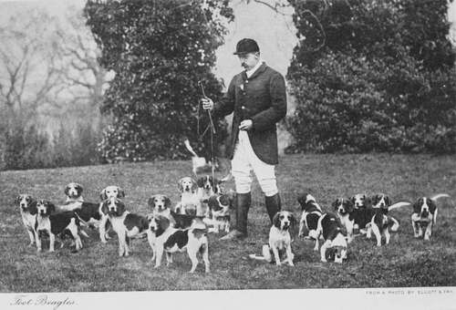

Hare-Hunting. Part 3
Description
This section is from the book "Hunting: A Manual of Fox, Hare, Stag & Otter Hunting", by J. Otho Paget. Also available from Amazon: Hunting: A Manual of Fox, Hare, Stag & Otter Hunting.
Hare-Hunting. Part 3
At the beginning of the season, or when you are first starting your pack, I advise you to go out as soon as it is light and try to trail up to a hare. You ought to know beforehand where the hares feed, or you will waste time, which is all-important in the autumn when a few hours' sun will dissipate every trace of scent. It is a capital education for young hounds, hunting a trail, and it helps to steady the old ones at the commencement of the season. Blood is quite as necessary with harriers as foxhounds, and you should make certain of killing or try your best for the first few days of the season, and after that your hounds will do it all themselves.
I think with harriers it is better, when a hare is lying in the open, to put her away, and then lay them quietly on when she is out of sight; but though I consider this plan gives the best results, I like hounds to find the game themselves. Of course, if you have any covert where there are hares, you can let them draw it, but mind they don't get a taste for rabbit.
Unless you are very much in want of blood, never give your hounds a view until the hare is about done. Avoid riding close to them, and endeavour to keep your field back; you will then find that, however much foxhound blood they possess, they will cast themselves back when they discover the hare is not forward. If you are a good sportsman and really care about hare-hunting, you will not give it up at the first difficulty that presents itself and draw again. With big hounds and a country plentifully stocked with hares, you need never trouble yourself whether it is a fresh hare or the run one you are pursuing, as you know your pack can always beat her unless she cheats them with some cunning double. You ought, however, never to give up your run hare, and the more difficult the problem she sets you the more anxious you should be to solve it. This, to my mind, is the chief pleasure in the sport, or otherwise you might get a brace of greyhounds to run for you.
One of the favourite dodges a hare has of throwing her pursuers off the track is to run a road, and I have known them to do this for two miles without once leaving the dusty surface. If you are not fortunate enough to have a good road-hound, your only plan is to keep holding the pack forward, first on one side and then on the other, but a still better way is to get some hounds on each side of the road. A hare that has been bustled and is getting wide of the smeuses she knows may do anything, and it is never safe to predict what she will do next.
There is another method of hunting the hare, and that is with foot-beagles. The harrier and the beagle have been crossed so often that it is almost impossible to point out the individual characteristics of each breed. The harrier I define as a hare-hound to be followed on horseback, and the beagle on foot. This is the only difference; but you will understand that the hound which suits one sport will not suit another.
I do not wish to dogmatise or lay down the law, but in my opinion the only sporting way of hunting the hare is to follow her on foot—that is, in a moderately level country and with a fair amount of grass. Then with a pack of hounds not exceeding fourteen inches, the odds are about the same as in fox-hunting—three to one on the hare.
Beagling is becoming more popular every day, and there are now several well-recognised packs that hunt regularly, showing capital sport and affording an immense amount of pleasure to a class of men who cannot afford to ride. For a professional or business man fox-hunting is generally out of the question—it takes up too much time, and keeping only one hunter is expensive ; but most men can get off for a few hours once or twice a week for a run with beagles. It is splendid exercise, and there is no finer phase of hunting.
The best size of hound to use is a question over which there has been much discussion, but it may safely be laid down as a rule that foot-beagles cannot be too small, provided they can catch their hare, say on an average at every third attempt. Those who follow hounds naturally want to see as much of them as possible, and no man on foot, however good a runner he may be, can keep near fifteen-inch beagles when there is a good scent. More than half the pleasure of beagling is being able to run with the pack, and though you may not kill quite as many hares with small hounds, you have the enjoyment of seeing all the hunting, and when you do kill your satisfaction is complete.
The description of country over which you hunt must of course be considered, and where there is much plough, or where there are many deep dykes, you will require a rather larger hound. When first starting a pack, you may be obliged to put up with what you can get, and a sixteen-inch beagle is much easier to find than the smaller sort, but as they become more perfect you should gradually be able to reduce your standard. It is well to bear in mind the old fable of the race between the hare and the tortoise. A pack that go very fast up to the moment when the hare first turns, and then have a long check, lose more time than the little fellows who hardly ever falter. The latter I compare to the tortoise, and they will generally win the race. The more perfect your pack is, the smaller may be your standard.
By a perfect pack I mean that there is neither head nor tail, that every hound has a first-rate nose, and not one has a fault in his work. Then they must be built on the right lines—good backs and loins, a middle-piece that allows free play for heart and lungs, with a barrel that is a guarantee of a strong constitution. Strength without lumber and quality without lightness should be your motto. Shoulders you must have, and any that are deficient in that respect you had better weed out at once. The bad-shouldered may keep up for the first half-hour, but with a good scent they will gradually drop behind after that, and every season they will get worse. A first-rate pack of beagles may perhaps be running at the top of their speed for a full hour, which is not only a tremendous trial of their condition and powers of endurance, but is also a great strain on their shoulders and other parts of the frame. The shoulders should be sloping and the bodies should have a perfectly even balance. Any defect in the formation of a hound's structure will entirely alter his gait and will nearly double the exertion of every movement. The evenly balanced hound glides over the ground as smoothly as a swallow skims the air, and with as little trouble to himself.
Continue to: